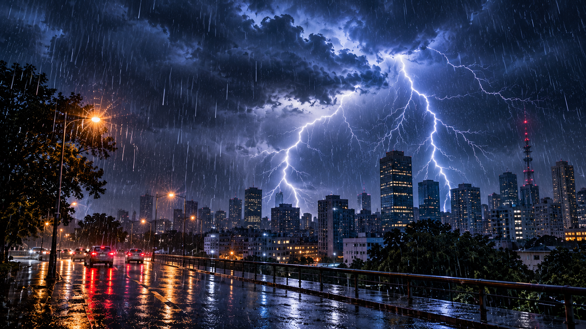

MONITORAMENTO AMBIENTAL OBSERVAR · CONECTAR · PREVENIR
NOSSA BASE DE DADOS
Base histórica · jan/2026
Uma visão dos dados ambientais
O StormWatch processou três bases ambientais, organizando e relacionando registros de chuva, hidrologia e geotecnia. Os indicadores abaixo representam os dados disponibilizados para o projeto.
Catálogo integrado: 548 estações únicas.
As quantidades de estações por fonte podem se sobrepor.
NOSSA METODOLOGIA
Da informação à preparação
O projeto organiza informações ambientais em etapas que facilitam sua análise e apresentação.
⌖
Observar
Reunir informações pluviométricas, hidrológicas e geotécnicas das bases disponibilizadas para o projeto.
⌘
Organizar
Padronizar campos, validar registros, identificar inconsistências e relacionar estações por proximidade geográfica.
◉
Analisar
Explorar indicadores, padrões temporais e informações integradas por meio de gráficos e tabelas.
◇
Informar
Tornar os dados mais acessíveis para apoiar a compreensão dos cenários ambientais e a preparação das comunidades.
ÁREAS DE ATENÇÃO
Dois riscos, uma missão
Diferentes fontes de dados para compreender fenômenos ambientais.
☂
MONITORAMENTO HÍDRICO
Enchentes e alagamentos
Explore os registros pluviométricos e hidrológicos utilizados no projeto para compreender o comportamento das chuvas e dos níveis monitorados.
Explorar dados ↗⌁
MONITORAMENTO GEOTÉCNICO
Deslizamentos
Conheça os registros geotécnicos e pluviométricos relacionados ao estudo de condições ambientais e instabilidade de encostas.
Explorar dados ↗
EXPLORE A PLATAFORMA
Os dados ganham significado quando podem ser compreendidos.
Acesse o Dashboard StormWatch e explore os registros por fonte de monitoramento, município, estação e sensor.
Acessar Dashboard ↗
9
Indústria, inovação e infraestrutura
11
Cidades e comunidades sustentáveis
13
Ação contra a mudança global do clima
ⓘ
Transparência e responsabilidade
Os dados apresentados correspondem ao período de 1 a 31 de janeiro de 2026. O painel possui finalidade exploratória e acadêmica: não representa monitoramento em tempo real, previsão de eventos ou emissão de alertas oficiais. As unidades de medida e os limiares oficiais de risco não foram informados nas fontes utilizadas.